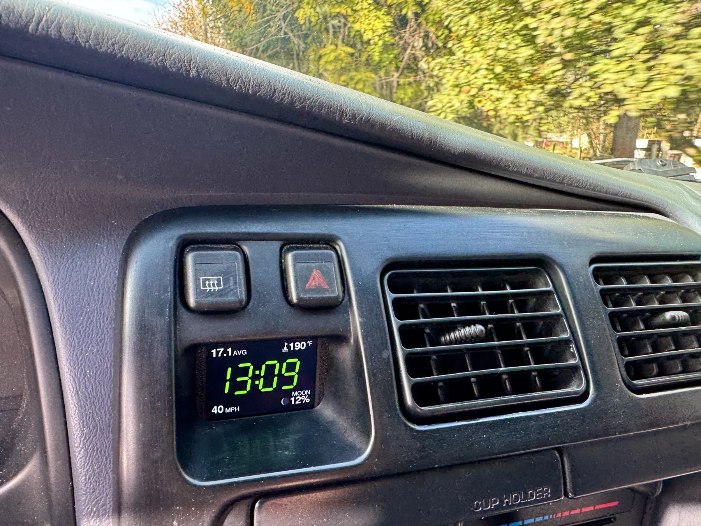

3rd gen 4Runner clock replacement
A new dash clock for the 1996 to 2002 Toyota 4Runner. Also fits the 1st gen Tacoma and T100.
The factory clock in the 3rd gen 4Runner fades with age. OVERCLOCK replaces it with a full-color screen that fills the same bezel opening. Same mounting points, same plug, no changes to the dash.
4Runner clock dim or not working?
A dim or dead clock is common on these trucks, and the newest of them is over 20 years old. A clock repair can bring it back for a while. A replacement fixes it for good and adds the gauges the truck never had.

Install
- Pull the factory clock.
- Drop OVERCLOCK in. Same opening, same connector.
- Run the knob cable and GPS antenna, plus any probes you add. The Bluetooth OBD2 dongle plugs into the diagnostic port under the dash.
No cutting or splicing. The original clock goes back in any time.
More than the time
- Outside temperature and ice warning. Up to four temperature probes.
- Engine codes, spelled out. With the Bluetooth OBD2 dongle, 1996 and newer.
- Live gauges. Speed, rpm, coolant, volts, trans temp and more.
- Built-in GPS. Sets the time and time zone by itself.
- Tilt and camp leveling. Wheel by wheel, for a rooftop tent.
- Logs every drive. On the memory card in the dash. No cloud, no account.
Add a trans temp gauge and OBD gauges
Trans temp shows on the clock screen, read from the engine computer on 1999 and newer automatics, or from an optional trans temp sender on any year. The same screen shows OBD gauges from the Bluetooth OBD2 dongle: speed, rpm, coolant, volts, fuel trims and more, with full-screen alerts for overheating and high trans temp. No extra gauge pod on the dash. Supported senders.
Try the real firmware in your browser or see it in real trucks.
Will it fit my 4Runner?
It fits every 3rd gen 4Runner, 1996 to 2002, in the factory clock opening with the factory plug. It also fits the 1st gen Tacoma (1995 to 2004) and the T100 (1993 to 1998).
Do I have to cut any wires?
No. It plugs into the factory clock connector. The knob cable and GPS antenna route behind the dash.
Can I put the factory clock back?
Yes. Nothing on the dash is changed, so the factory clock goes back in the same way it came out.
Will it drain my battery?
No. Parked, it draws under 1 mA between check-ins and has a low-battery cutoff. The numbers are on the power page.
How much is it?
Estimated $300 to $350. No payment to join the list. Add your truck to the list or read more questions.